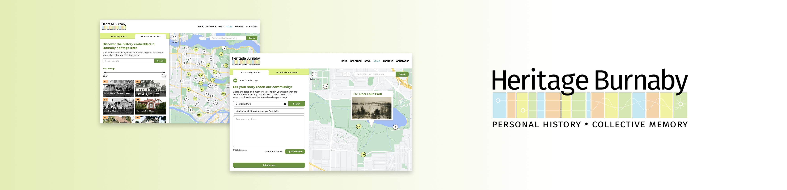
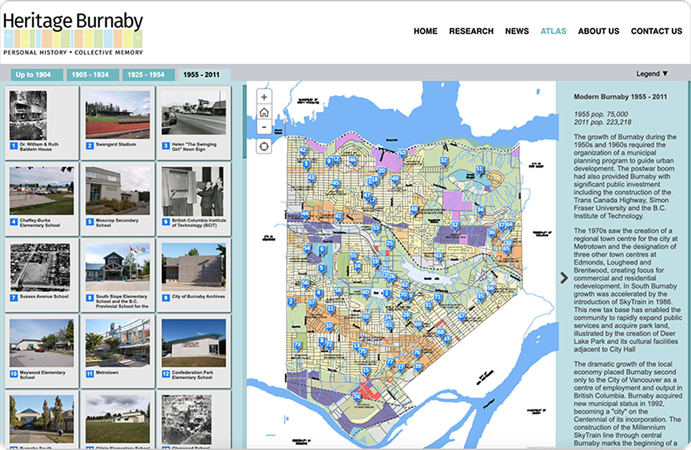
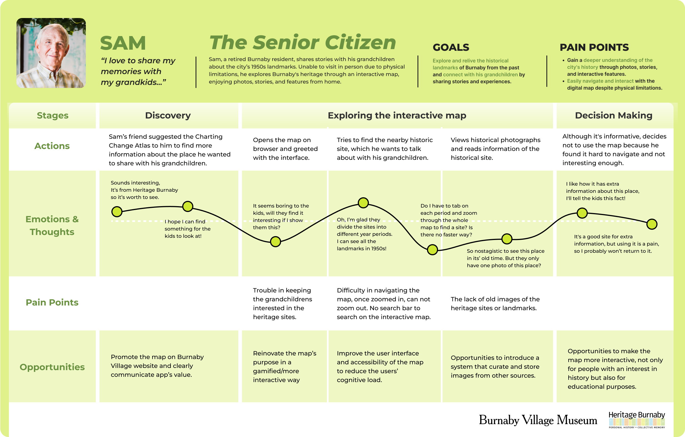
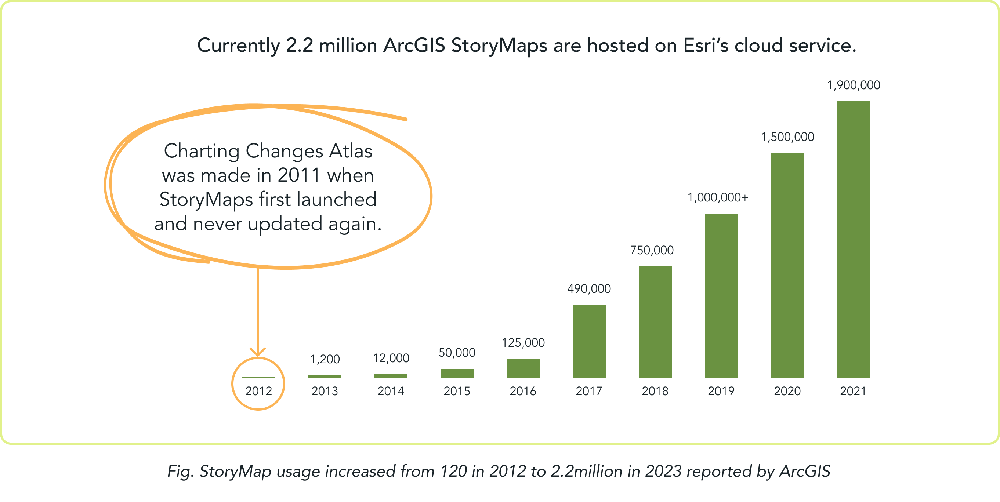

Heritage Burnaby Interactive Map
UX/UI Design / User Research / Product Design
An interactive historical map on the Heritage Burnaby website, shaped by stories from the community, marking the memories and evolution of Burnaby’s landscape and its landmarks over the past 100 years.

×

My Role
- User Researcher
- UX/UI Designer
- Interaction Designer
Team
- Jaxine Kurniawan
- Lori Jiang
- Kim Phan
- Keerat Mahil
- Zhaniya Yeltindinova
Duration
- 12 weeks - Fall 2023
Overview
This is a senior-level interaction design course in which the team had a chance to find and partner with Heritage Burnaby, with the goal of promoting knowledge and exploration of Burnaby's history and building community bonds.

Who is Heritage Burnaby?
Heritage Burnaby is an online repository for Burnaby's historical archives. They have an interactive map called the Charting Change Atlas which was created in 2010 to showcase how Burnaby's landscape has changed over time. It was made with the purpose to "better serve Burnaby's citizens by providing more opportunities to learn about the City's heritage and history."

Since launching in 2010, the interactive map was initially popular but gradually lost its audiences and became inactive, leading our client to wonder whether the map had potential in drawing current interest if it was redesigned.
Discovery
User Testing & Interviews
In order to understand the reasons why users are not motivated to engage with the map like when it was released, the team decided to conduct user interviews with prospective users of the map to find out their frustrations, needs and goals with the existed map.
- Format: in-person usability testing with think-aloud method and semi-structured interviews
- Participants: 3 Burnaby residents interested in Burnaby's history, 1 history student, and 1 museum researcher
Synthesizing Research into Major Points
When I sat down to synthesize the information, I decided to set aside the comments about the unappealing UI and focus more on their experience and emotions while navigating the map:
- Users find it is unnecessary to use the map because they can always find historical information by googling.
- Difficulty in navigation due to the lack of essential tools like search bar or intuitive zoom feature causes frustration to the users.
- The exclusive information and photos from Heritage Burnaby are still informative and interesting to users.
Based on the insights and the user journey, we decided to put the need for inteventing a completely new way to revive the maps instead of just updating the user interface to be better. Therefore, we targeted the maps on seniors who have memories with the heritages and people who like history.
Define
How might we making the map relevant to seniors and history lovers to increase people’s interest and engagement with the map while retaining it’s historical/informational value?
Develop
Participatory Workshop to Brainstorm Solutions
To promote innovation and ensure intended users' needs are met, the team host a workshop with 5 participants: 3 Burnaby residents interested in Burnaby's history, 1 history student, and 1 museum supervisor.
I structured the workshop activities based on our goal: to foster creativity in participants. The activities progressed from introducing them to the map to letting them rank the design concepts and add their thoughts, allowing us to gather real-time feedback on their attitudes toward design decisions.
Participatory Workshop insights
“It doesn't feel like a StoryMap, it just looks like a regular map with historical information”
During the workshop, an urban planning assistant highlighted that the map, created with Esri's StoryMaps, lacked the essence of a true story map. This prompted me to research further, revealing that Esri's StoryMaps has grown from 100 maps in 2011 to 2.2 million in 2023, which suggests there is value in the story mapping concept, but issues with its current execution.

Active interest in story sharing among Burnaby residents!
A participant from the workshop led me to discover a Facebook group called Burnaby Nostalgia with over 10,000 members. Members shared photos and memories of historical and recreational sites and hundreds of likes and comments were being exchanged daily. This evidence drove me to propose transforming the map into a community story-sharing platform, integrating protected historical sites and beloved local spots.
Deliver
Proposed Solution
We redesigned the map into a community-driven story map, integrating local stories. By attracting visitors through personalized storytelling, the map allows anyone with a connection to Burnaby to share their stories and photos connected to historical landmarks on the map, which was a solution validated by findings from our participatory workshop.
Ideate
I looked at other map-based interfaces for inspiration and found the webpages for Layers of London and Airbnb to have the most relevant UI design elements to apply to our story map:
- full screen map with minimizable side panel helps to optimize screen space
- multiple ways to navigate information (side panel suggestions, targeted search, and free discovery on map) gives users more freedom and control
- organizing map pinpoints in clusters helps reduce cognitive load
Taking the elements from the precedents, I then created mid-fidelity wireframes to outline the user flow for the integration of the new community stories feature with the existing historical information, with consideration of the pain points from user research as well as key insights from the competitive analysis.

Final Design Mockup
Community Stories
New landing page features the story map of a collective history, where people can share their memories associated past and present landmarks across Burnaby.

Story Submission - User Side
Streamlining story submission for both users and client through easily accessible submission page. Including word count and photo limit to ensure concise, impactful stories.

Story Submission - Client Side
Heritage Burnaby administration team can manage posts submitted by community members. Allowing the administrative staffs to accept or decline submissions, providing emailed feedback to users.

Historical Information
Keeping historical context of landmarks in a separate tab from community-stories, since it was a positively viewed feature of the original map. Slider added for more control over desired date range..

Marketing
Promotion on Heritage Burnaby website and associated partner websites such as Burnaby Village Museum and City of Burnaby, as well as social media.

Reflection
Due to time constraints, we prototyped a minimal viable product for our client and did not have time to carry out usability testing to validate our design. However, conducting usability testing and developing more engaging ways for users to interact with the map's information would be my next step in furthering the project.